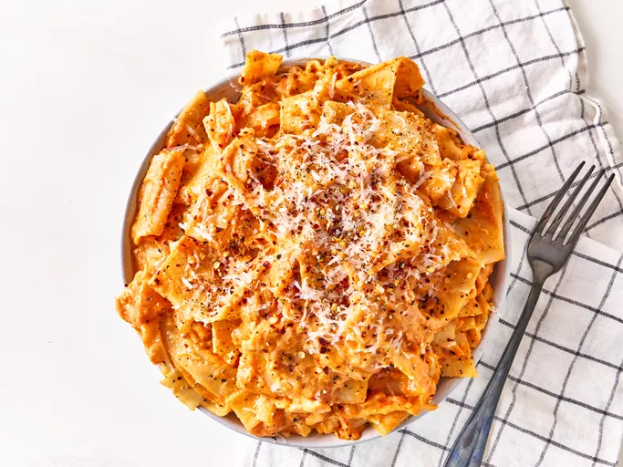

Lasanga

Description
Lasanga originated in italy during the Middle AgesThe oldest know written reference to lasanga apperas in 1282 in a ballad
transcribed by a Bolognese notary, "Pur bii del vin, comadre, e no lo temperare" ('Just drink some wine, my woman, and do not dilute it '), part of the Memoriali Bolognesi (lit. 'Bolognese Memorials').
Ingredients
- For the meat Sauce
- 2 tbsp olive oil
- 1 onion (chopped)
- 4 cloves garlic (minced)
- 500 g ground beef or minced meat
- 2 cups tomato sauce
- 2 tbsp tomato paste
- 1 tsp salt
- 1 tsp black pepper
- 1 tsp oregano
- 1 tsp basil
- 1/2 tsp chili flakes (optional)
- For the Cheese Layer
- 2 cups ricotta cheese or cottage cheese
- 2 cups mozzarella cheese (shredded)
- 1/2 cup parmesan cheese (grated)
- 1 egg
- Other Ingredients
- 12 lasagna sheets/noodles
- Water for boiling noodles
- Butter or oil for greasing the baking dish
Steps
- Prepare the Sauce
- Heat olive oil in a pan.
- Add chopped onions and cook until soft.
- Add garlic and cook for 1 minute.
- Add ground meat and cook until browned.
- Pour in tomato sauce and tomato paste.
- Add salt, pepper, oregano, basil, and chili flakes.
- Simmer for 15-20 minutes.
- Prepare the Cheese Mixture
- In a bowl, combine ricotta cheese, egg, and parmesan cheese.
- Mix well.
- Cook the Lasagna Sheets
- Boil water in a large pot.
- Cook lasagna sheets according to package instructions.
- Drain and keep aside.
- Assemble the Lasagna
- Grease a baking dish.
- Spread a thin layer of meat sauce.
- Add a layer of lasagna sheets.
- Spread cheese mixture.
- Add mozzarella cheese.
- Repeat the layers until ingredients are used.
- Finish with sauce and mozzarella on top.
- Bake
- Preheat oven to 180°C (350°F).
- Cover with foil and bake for 25 minutes.
- Remove foil and bake for another 10-15 minutes until golden.
- Serve
- Let the lasagna rest for 10 minutes.
- Slice and serve hot.
Home page